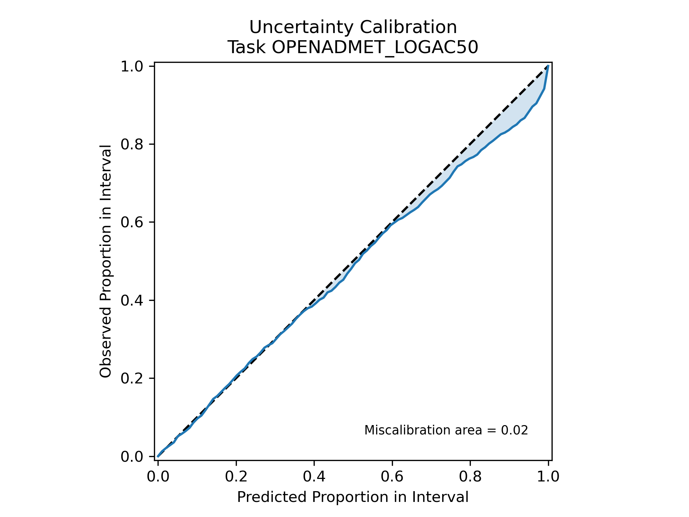
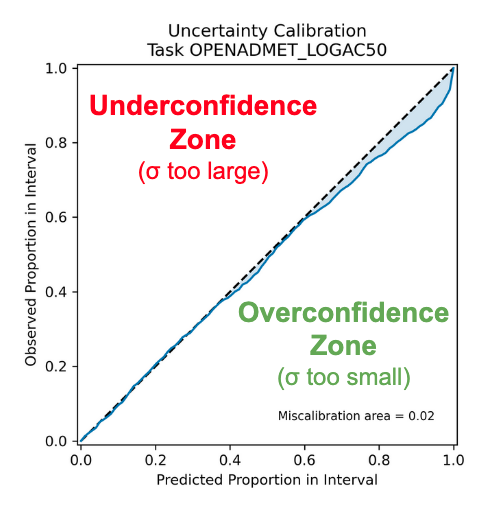

4.0 Ensemble Model Training
What is Ensemble Model Training?
 .
.
In our Anvil workflow, our ensemble learning process at a high-level is:
the training data is bootstrapped, aka randomly sampled with replacement
a user-selected model, e.g.
LightGBM Regressor,ChemProp Regressor, etc. is trained on the bootstrapped dataSteps 1 and 2 repeat for a user-designated
nnumber of modelsthe predictions of each trained model are combined, e.g. averaged together
Why Train an Ensemble of Models?
For complex problems, like predicting ADMET profiles of compounds where data is sparse, training an ensemble of models increases the robustness and accuracy of the model predictions, especially compared to relying on a single model.
Further, since you’re taking an average of the preditions across n number of models, you are also able to calculate the standard deviation or uncertainty of your predictions. This is essential for evaluating how reliable the ADME model is for real world applications and performing active learning with your model.
If I’m relying on my model’s predictions to pick active compounds, how off can my predictions be?
What degree of error does my model have?
What compounds would be most informative to assay next?
Requirements
As in 02_Training_Models.ipynb, you will need:
A dataset that has been processed with
01_Curate_ChEMBL_Data.ipynb.A
YAMLfile with instructions for Anvil and specifically for ensemble model training. We will show you how to create this file in this notebook.
Overview
This notebook will walk you through how to train an ensemble of models with the Anvil workflow with the same CYP3A4 data used in 02_Training_Models.ipynb.
Create the YAML file
As in 02_Training_Models.ipynb, we will use a YAML file containing all the necessary information to train the ensemble. The only difference from the usual anvil recipe is the ensemble section.
In the below example, we will be training a 5-model ensemble of LGBM regressors with the CYP3A4 ChEMBL data.
# This spection specifies the input data
data:
# Specify the dataset file
resource: ../01_Data_Curation/processed_data/processed_CYP3A4_inhibition.csv
type: intake
input_col: OPENADMET_SMILES
# Specify each (1+) of the target columns, or the column that you're trying to predict
target_cols:
- OPENADMET_LOGAC50
dropna: true
# Additional metadata
metadata:
authors: Your Name
email: youremail@email.com
biotargets:
- CYP3A4
build_number: 0
description: basic regression using a LightGBM model
driver: sklearn
name: lgbm_pchembl
tag: openadmet-chembl
tags:
- openadmet
- test
- pchembl
version: v1
# Section specifying training procedure
procedure:
# Featurization specification
feat:
# Using concatenated features, which combines multiple featurizers
# here we use DescriptorFeaturizer and FingerprintFeaturizer for 2D RDKit descriptors and ECFP4 fingerprints
# See openadmet.models.features
type: FeatureConcatenator
# Add parameters for the featurizer. Full description of the featurizer options are in Section 5.
params:
featurizers:
DescriptorFeaturizer:
descr_type: "desc2d"
FingerprintFeaturizer:
fp_type: "ecfp:4"
# Model specification
model:
# Indicate model type
# See openadmet.models.architecture for all model types
type: LGBMRegressorModel
# Specify model parameters
params:
alpha: 0.005
learning_rate: 0.05
n_estimators: 500
# Ensemble specification
ensemble:
type: CommitteeRegressor
n_models: 5
calibration_method: scaling-factor
# Specify data splits
split:
# Specify how data will be split
# See openadmet.models.split
type: ShuffleSplitter
# Specify split parameters
params:
random_state: 42
train_size: 0.7
val_size: 0.1 # Validation set is needed for uncertainty calibration
test_size: 0.2 # If you want to compare tree-based models with Dl models later, the test sizes should match
# Specify training configuration
train:
# Specify the trainer, here SKLearnBasicTrainer as model has an sklearn interface
# could also use SKLearnGridSearchTrainer for hyperparameter tuning
type: SKLearnBasicTrainer
# Section specifying report generation
report:
# Configure evaluation
eval:
# Generate regression metrics
- type: RegressionMetrics
params: {}
# Generate regression plots & do cross validation
- type: SKLearnRepeatedKFoldCrossValidation
params:
axes_labels:
- True pAC50
- Predicted pAC50
max_val: 10
min_val: 3
pXC50: true
n_splits: 5
n_repeats: 5
title: True vs Predicted pAC50 on test set
# Generate uncertainty metrics
- type: UncertaintyMetrics
params:
bins: 100
resolution: 99
scaled: True
# Generate uncertainty calibration plot
- type: UncertaintyPlots
params: {}
The command for running anvil is exactly the same as it was before!
openadmet anvil --recipe-path anvil_ensemble.yaml --output-dir ensemble
We have already run this for you and have provided the results of the ensemble model training in ensemble/.
If training deep learning models, we highly recommend training on GPU.
With the ensemble training model output, you’ll notice that there is now a new plot: OPENADMET_LOGAC50_uncertainty-calibration-plot.png.
.
This plot helps visualize how miscalibrated or “off” the ensemble’s predicted uncertainty intervals (derived from the calculated standard deviation) are.
If our model perfectly predicted the uncertainty intervals - in other words, if the error between \(y_{predicted}\) and \(y_{actual}\) always fell within the predicted uncertainty intervals - then the blue line would fall precisely along the dotted black line.
.
If the blue area was above the black line in the underconfidence zone, this would mean that our model’s uncertainty intervals are too large or, our model is underestimating uncertainty.
When the blue area is below the black line in the overconfidence zone, this means the uncertainty intervals are too narrow or, our model is overestimating uncertainty.
We can see our blue line does not completely fall along the dotted black line, but the shaded blue area represents the area of miscalibration, aka where our uncertainty estimation is inaccurate, is reasonably small (=0.02).
This is because in our ensemble model training Anvil workflow, we applied a scaling factor to recalibrate our uncertainty estimations to minimize the miscalibration area. This is known as uncertainty calibration and helps empircally adjust the width of your error bars to match the distribution expected from a validation set. This is done using the Uncertainty Toolbox package. Learn more by reading the documentation there!
- Now let’s apply our ensemble model to some unseen compounds!
End of
04_Ensemble_Model_Training~